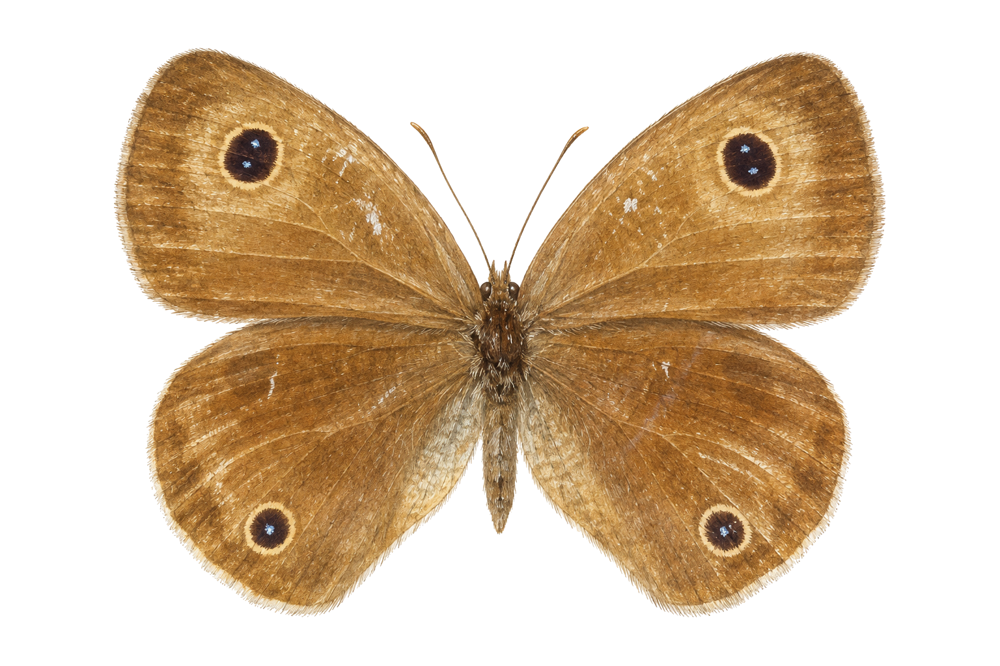

Nymphalidae · 137 / 165
Ypthima masakii
Ypthima masakii

বৈশিষ্ট্য ও শনাক্তকরণ
ছোট বাদামি প্রজাপতি; ডানার নিচে ঢেউরেখা ও চোখের দাগ থাকে। ঋতুভেদে আকারেও পরিবর্তন হয়।
স্ত্রী ও পুরুষের পার্থক্য
স্ত্রীর সামনের ডানার চোখের দাগ সাধারণত বড় এবং ডানার রেখা বেশি গোলাকার।
আকার
সামনের এক ডানার দৈর্ঘ্য প্রায় ২২ মিমি; এটি সাধারণ নির্দেশক মান।
ওকিনাওয়ার দ্বীপে রেকর্ড
ইশিগাকি, তাকেতোমি, কোহামা ও ইরিওমোতেসহ কয়েকটি দ্বীপ; মিয়াকোতে ১৯৬২ সালের একটি রেকর্ড তালিকাভুক্ত।
আবাসস্থল
বনপ্রান্ত ও বনপথের ধারের কিছুটা অন্ধকার ঘাসযুক্ত স্থান।
জীবনযাপন ও অতিরিক্ত তথ্য
রূপতাত্ত্বিক বিবরণে উষ্ণ মৌসুমের প্রজাপতি অপেক্ষাকৃত ছোট হওয়ার প্রবণতা উল্লেখ আছে।
শূককীট ও খাদ্য উদ্ভিদ
Lophatherum, Miscanthus, Imperata ও রিউকিউ বাঁশসহ ঘাসজাতীয় উদ্ভিদ খায়।
তথ্যসূত্র ও সহায়ক পাঠ
- 日本の蝶：形態・雌雄差
ডেটায় উল্লেখিত সূত্র দেখার তারিখ: 2026-11-10 - 沖縄蝶類生態図鑑：マサキウラナミジャノメ
ডেটায় উল্লেখিত সূত্র দেখার তারিখ: 2026-11-10 - 昆虫エクスプローラ：ジャノメチョウ亜科
ডেটায় উল্লেখিত সূত্র দেখার তারিখ: 2026-11-10
তথ্য সরবরাহকৃত ডেটার উপর ভিত্তি করে তৈরি (হালনাগাদ: ১০ নভেম্বর ২০২৬)। কোনো দ্বীপের রেকর্ড সেখানে বর্তমান স্থায়ী বসবাস বা সহজে দেখা পাওয়ার নিশ্চয়তা নয়। চিত্র নির্দেশক; শনাক্তকরণে বাস্তব নমুনা ও সূত্র মিলিয়ে দেখুন।